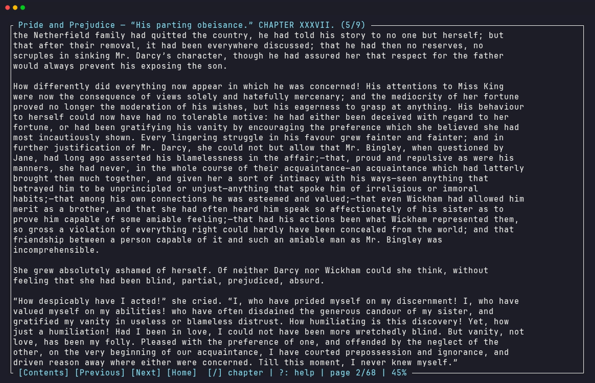
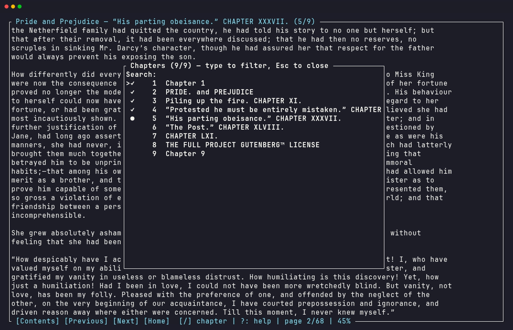
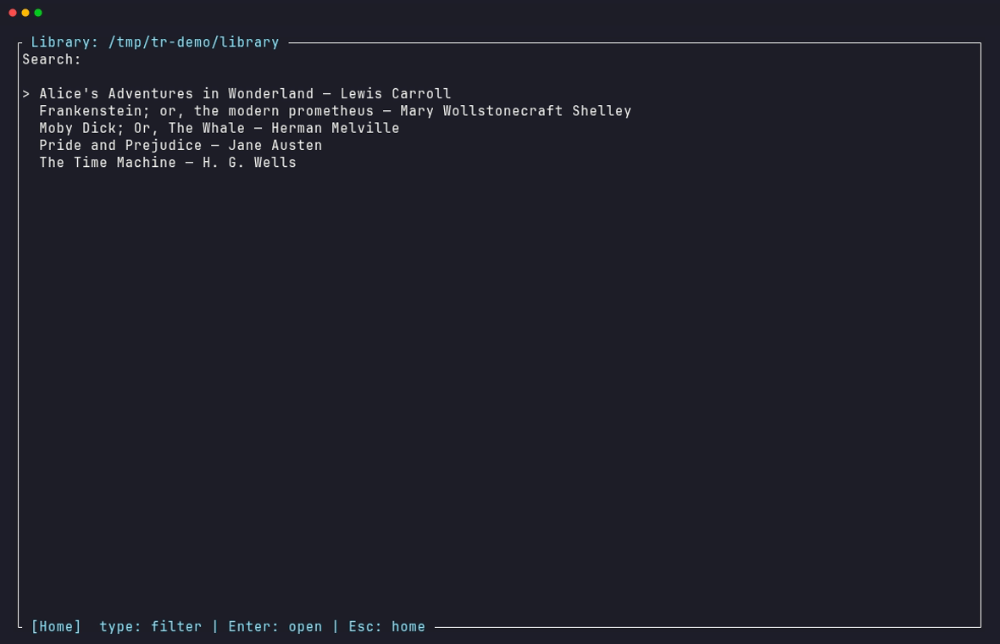
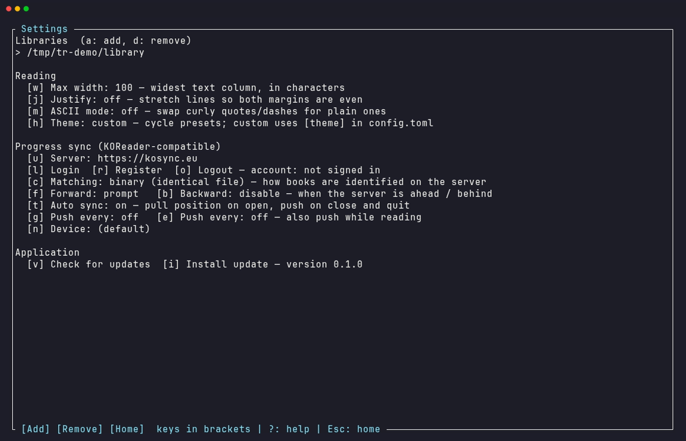
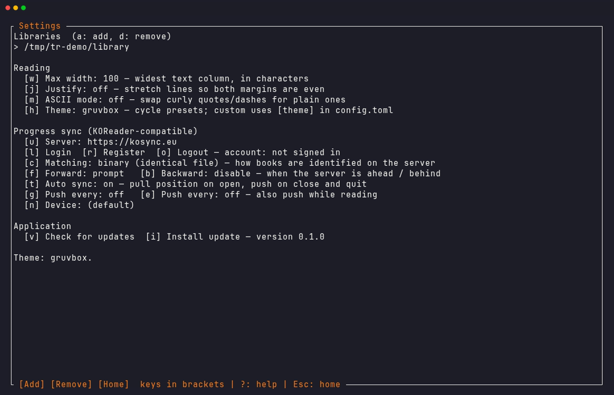

Everything a reader needs. Nothing it doesn't.
No Electron, no accounts, no cloud lock-in. One small binary that opens instantly and gets out of the way.
Typography that respects the text
Configurable column width, full justification, and clean chapter layout. Resize your terminal mid-sentence — the word you were reading stays put.
Syncs with your e-reader
Speaks KOReader's kosync protocol. Read at your desk, pick up the exact paragraph on your Kobo or Kindle at night — via kosync.eu, the official server, or self-hosted.
Instant libraries
Point it at a folder of EPUBs. Metadata is cached by file signature, so even large collections open in milliseconds after the first scan.
Private by design
Credentials go in your OS keyring — never on disk. Logs redact secrets. No analytics, no phone-home, and NO_COLOR is honored.
Keyboard first, mouse complete
Every menu is clickable with hover highlighting; the page itself stays distraction-free. Press ? anywhere for help.
Nine themes, or yours
Gruvbox, dracula, nord, solarized, catppuccin, tokyo-night, and more — cycle them live from Settings. Or set a custom accent in config.toml.
Search, bookmarks, stats
Search the whole book with /, drop bookmarks with m, and see your session's pages and reading time when you put the book down.
Zero-maintenance
Self-updates with one command, a built-in doctor that checks everything from config to live server auth, and an offline queue that syncs when you're back online.
One book. Every device. Same paragraph.
TerminalReader implements the same progress-sync protocol as KOReader, down to the document hashes and position pointers.
Sign in once
Create a free account on kosync.eu right from Settings — just a username and password. Or point it at your own server.
Read anywhere
Progress is pulled when you open a book and pushed when you close it, with configurable prompt/silent strategies in each direction.
Never lose your place
Offline? Progress queues on disk and syncs later. Positions map through KOReader xpointers, so devices agree on the exact paragraph.
See it in action
Captured from the real app, reading public-domain classics from Project Gutenberg.





| Space | next page |
| t | table of contents |
| / then n | search the book, jump between matches |
| m / M | add a bookmark / open bookmarks |
| s / p | push / pull sync progress |
| ? | help overlay, on every screen |
| Esc | save your place and step back |
Install in seconds
One command. No package manager required, nothing to configure — the first run walks you through picking a library folder.
🐧 Linux & 🍎 macOS
curl -fsSL https://raw.githubusercontent.com/\
Kardzhilov/TerminalReader/main/install.sh | shInstalls to ~/.local/bin. x86_64 and ARM supported.
🪟 Windows
irm https://raw.githubusercontent.com/\
Kardzhilov/TerminalReader/main/install.ps1 | iexInstalls to %LOCALAPPDATA%\Programs and updates your PATH.
🦀 From source
git clone https://github.com/Kardzhilov/TerminalReader
cd TerminalReader
cargo install --path crates/tr-tuiRust 1.85+. Fully open — audit every line.